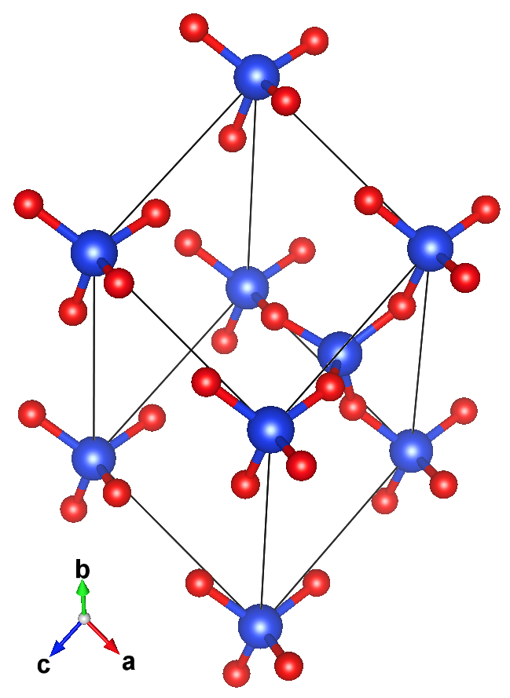
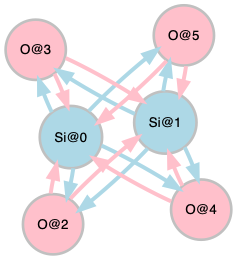

Introduction¶
Interacting systems, molecules, and biopolymers can be represented topologically as graphs. A crystalline material may be represented topologically as a multi-graph, which is called a crystal graph. A method to create crystal graphs is proposed in the CGNN paper, and its Python implementation (tools/mp_graph.py) is available from the repository Tony-Y/cgnn.
Example
The structure (left) and crystal graph (right) for a form of \mathrm{SiO}_{2}:
 
Crystal Graphs¶
A crystal graph is composed of a set of nodes and a multi-set of directed edges. Given a sequence of nodes with a label, the i-th node's label can be mapped to an integer k_{i} \in [0\mathrel{{.}\,{.}}K-1], where K denotes the number of node species, and then the node sequence can be encoded into an integer sequence \{ k_{i} \}_{i=1}^{N}, where N denotes the number of nodes. Since a directed edge is defined by a source and target node, the multi-set of nodes neighboring the i-th node is defined by the complete multi-set of target nodes for the i-th node serving as a source node, and can be encoded into the index list of the target nodes \mathcal{N}_{i}. Thus, the crystal graph may be represented by the pair of the integer sequence and the sequence of the neighbor lists (\{ k_{i} \}_{i=1}^{N}, \{ \mathcal{N}_{i} \}_{i=1}^{N}).
Example
The OQMD contains 89 chemical elements (1 to 83, and 89 to 94 in atomic number), which can be labeled with integer numbers k \in [0\mathrel{{.}\,{.}}88] in the ascending order of atomic number. Since the atomic numbers of Si and O are 14 and 8, respectively, the crystal graph of \mathrm{SiO}_{2} in the previous example is represented by the pair of the integer sequence
[13, 13, 7, 7, 7, 7]
[ [2, 3, 4, 5], [2, 3, 4, 5], [0, 1], [0, 1], [0, 1], [0, 1], ]
Node species may have some features including its integer label. The node vector can be made from those features, and thus we have the set of K node vectors. The integer sequence \{ k_{i} \}_{i=1}^{N} is mapped to a sequence of vectors \{ v_{i} \}_{i=1}^{N}, where v_{i} \in \mathbb{R}^{d_{v}} is the k_{i}-th node vector. The sequence of node vectors is used as an input for a CGNN model.
Example
If the materials dataset used has only 3 chemical elements, Ti (titanium), O (oxygen), and S (sulfur), their node vectors can be represented using the one-hot encoding as follows:
Ti : [1, 0, 0] O : [0, 1, 0] S : [0, 0, 1]
[ [1, 0, 0], [0, 1, 0], [0, 0, 1], ]
| Element | Electronegativity |
|---|---|
| Ti | 1.54 |
| O | 3.44 |
| S | 2.58 |
When the electronegativity is added to the node vector, the list of node vectors is given by the following:
[ [1, 0, 0, 1.54], [0, 1, 0, 3.44], [0, 0, 1, 2.58], ]
Dataset¶
The CGNN program needs the following files:
targets.csvconsists of all target values.graph_data.npzcomposed of all node and neighbor lists of graphs.config.jsondefines node vectors.split.jsondefines data splitting (train/val/test).
Target Values¶
targets.csv must have a header row consisting name and target names. The name column must store identifiers like an ID number or string that is unique to each example in the dataset. The target columns must store numerical values excluding NaN and None.
Graph Data¶
You can create a graph data file (graph_data.npz) as follows:
graphs = dict() for name, structure in dataset: nodes = ... # A species-index list neighbors = ... # A list of neighbor lists graphs[name] = (nodes, neighbors) np.savez_compressed('graph_data.npz', graph_dict=graphs)
structure stores structural information used to create a graph with
nodes \{ k_{i} \}_{i=1}^{N} and neighbors \{ \mathcal{N}_{i} \}_{i=1}^{N},
and name is the same identifier as in targets.csv for each example.
Node Vectors¶
You can create a configuration file (config.json) as follows:
config = dict() config["node_vectors"] = ... # A list of node feature lists with open("config.json", 'w') as f: json.dump(config, f)
When using the one-hot encoding, the node vectors are given by
config["node_vectors"] = np.eye(n_species,n_species).tolist()
n_species denotes the number of node species, K.
Data Splitting¶
You can create a data-splitting file (split.json) as follows:
split = dict() split["train"] = ... # The index list for the training set split["val"] = ... # The index list for the validation set split["test"] = ... # The index list for the testing set with open("split.json", 'w') as f: json.dump(split, f)
targets.csv is read into.